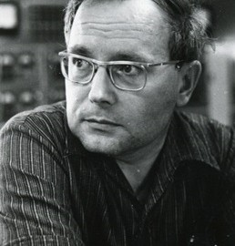

Язык программирования АЛЬФА и оптимизирующий Альфа‑транслятор, многоязыковая система программирования БЕТА, первая советская система разделения времени АИСТ-0, система учебной информатики Школьница, система подготовки печатных изданий Рубин, многопроцессорная рабочая станция МРАМОР — все эти проекты были инициированы Ершовым и выполнялись под его руководством. Он ввел в научный оборот термин «информатика» для обозначения науки, связанной со способами обработки, хранения и передачи информации с помощью ЭВМ. Книга Андрея Ершова «Программирующая программа для электронной вычислительной машины БЭСМ», изданная в 1958 году, стала одной из первых в мире монографий по автоматизации программирования. Он был первопроходцем на ниве компиляции (его «программирующие программы» — это фактически компиляторы). Ершов занимался смешанными вычислениями: тем, что сейчас называется «суперкомпиляция». Ему принадлежит идея о сведении задачи распределения регистров к раскраске графа — то есть к той форме, которая используется в большинстве оптимизирующих компиляторов сегодня. В 1960-е годы Ершов вместе с коллегами начал эксперименты по преподаванию программирования школьникам, что привело к созданию государственной программы по введению курса информатики и вычислительной техники в средние школы. В 1974 году Андрея Ершова избрали Выдающимся членом Британского вычислительного общества (British Computer Society). В 1980 году за значительный вклад в работу Международной федерации по обработке информации (IFIP) он был награжден Почетным знаком IFIP «Серебряный сердечник (Silver Core)».